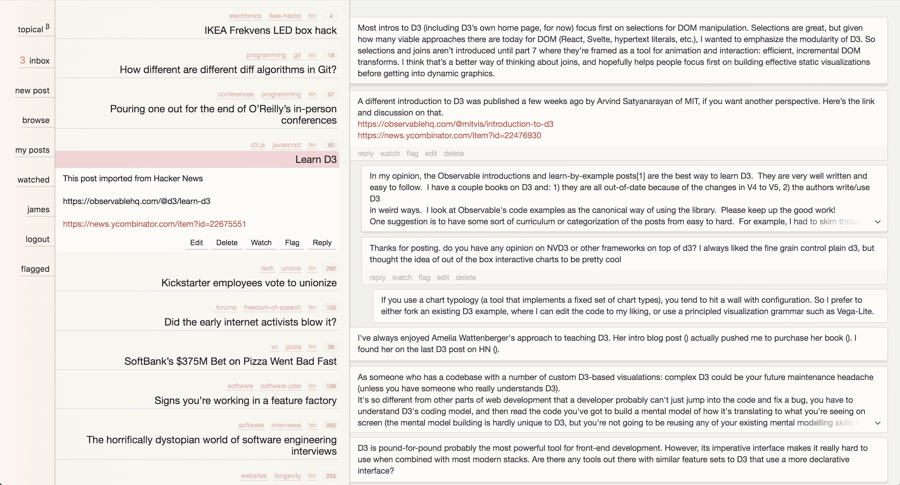

Topical is an experimental discussion platform that aims to avoid distracting extraneous signals and allow the user to focus on the message. Development is currently on hiatus and no demo is available.
Topical is still under development. Content in the screenshot has been imported from Hacker News for testing purposes only. Technologies used include React, mobX, Webpack, Node.js, Express, and Postgres.
The impetus for this post was a comment on HN about housing demand. Partial quote:
“When you get rid of those [agriculture and manufacturing] jobs and replace them with information work, you create a feedback loop with no dampening in it. People want to go where the most jobs are, so they move to the cities. Businesses want to open where the most workers are, so they start companies in cities.
The next thing you know, all the small towns are filled with dirt cheap empty houses because there are no jobs. Meanwhile, every metro area is bursting at the seams.”
This is taken as an assumption from here.
Basically, what would it look like to enable more people to live in and leverage the existing infrastructure of less urban areas? There are a lot of reasons why “working from home” can be challenging for both individuals and companies. There is a lot of value in “the office.” How could we give people more flexibility in where they live, reasonable commute times, connection to their coworkers, and the ability to compartmentalize their work life to a place of business?
Enter the remote work center. It has the vibe of a big tech campus building. Food court, supporting stores and services, common areas, etc. But a lot of individual offices that people go into and work for whatever company. Maybe some larger units for small groups that are colocated. Similar to a scaled up coworking space, or, of course, WeWork. But WeWork largely operated in dense city centers and targeted more transient and nomadic tenants. This concept would leverage cheaper infrastructure and QoL outside of city centers, and target more stable long-term rentals.
The setups inside the offices would naturally vary by individual and company, but there might be a baseline tech package designed for this paradigm. The core tension that needs to be addressed is the balance between privacy and immediacy. You don’t want always-on video, but you want someone to be able to stop by your desk, you want to be able to form ad-hoc conversations. Personally, I’m not big on VR yet, and I don’t think people are ready to don the headset all day, but I suppose that could be an option (and a fairly easy one).
What I envision is more of a bank of displays, separate from the core workstation. Not as intimidating as a full-on command center, but enough that you can give a certain number of people (or groups) dedicated physical positions. Multiple cameras in the room that you control, so you can easily share different views. And a dedicated hardware control console for managing this.
For example, you might press the “Stacy” button, record a short message, and she will see something pop up on your screen in her office (or some kind of bucketed one if you’re not in her Top 8). She can then choose to view it, and send a response, and/or open a feed, or get to it later. If you guys get into it, you might hit the “John” button and try to rope him in. You might have one or more team broadcast channels. Having this dedicated communication space would help separate this chaos from your “actual work” surfaces, and distribute the one master notification feed of your phone into something more manageable.
This would also be a clear value add over the kind of spaces people would have in their homes, it’s now more than just a different space to work in. It’s somewhat resistant to economic changes as well as it supports pretty much any kind of information work and has a fluid modularity to it (like an apartment building with individual tenants rather than 13 floors leased by one company, or that company doing a bespoke buildout).
Tell me what’s wrong with this idea on HN!